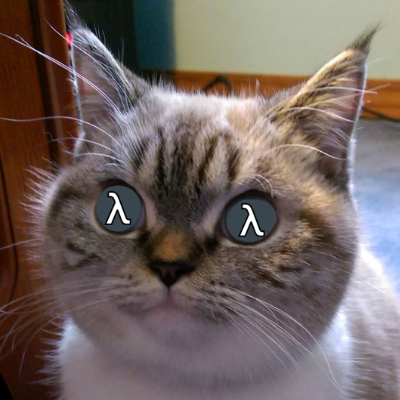
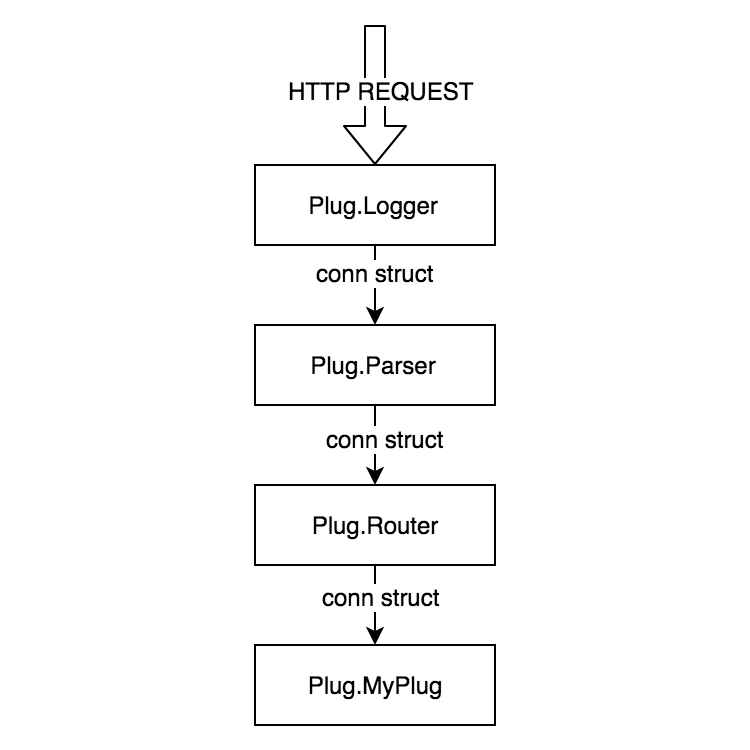

Plug & Phoenix
Elixir web applications
Elixir - language

Functional
Factorial in Elixir
defmodule Factorial do
def fact(n) do
if n == 0 do
1
else
n * fact(n-1)
end
end
end
Functional properties
- Immutability
- Everything is an expression
- First class functions & higher order functions
- Pattern matching
Pipe operator
x |> f() ↔ f(x)
x |> f(y) ↔ f(x, y)
Fun
Extensible (macros)
Sample macros
ExUnit - test framework
test "greets the world" do
assert Example.hello() == :world
end
Ecto - DB wrapper
query = from u in User,
where: u.age > 18 or is_nil(u.email),
select: u
Elixir - platform
Erlang VM - BEAM
Concurrency
Scalability
Fault tolerance (let it crash)
Hot code swap
Plug
Plug architecutre
(Currently Cowboy)
Phoenix
- Based on Plug
- MVC framework like RoR, ASP.NET MVC

Phoenix - flow
- Endpoint
- Router
- Controller
- View
- Template